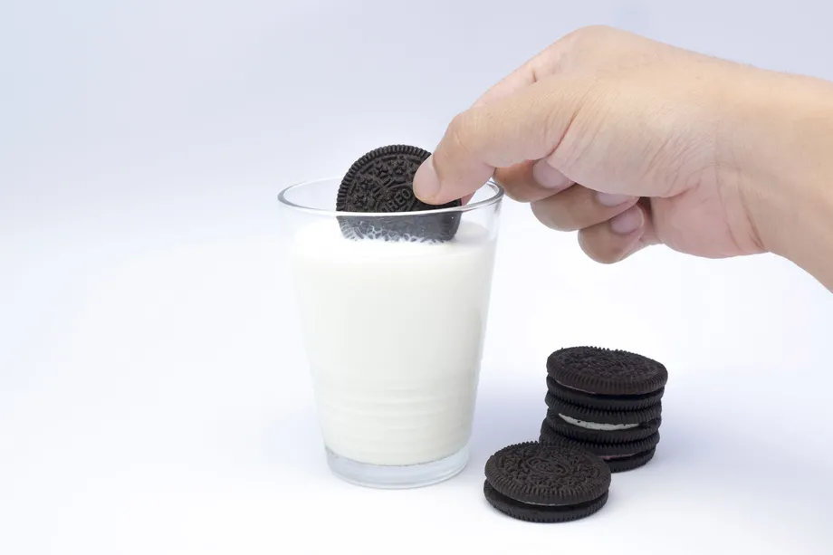

Oreos with milk

Description
Oreos, the mischievous duo of the cookie world, seduce your taste buds with their tantalizing symmetry. Two dark chocolate wafers, locked in a passionate embrace, sandwich a creamy filling that oozes with temptation. As you take a bite, the cookies crumble and surrender to your teeth, releasing a flood of blissful sweetness. Each morsel invites you to indulge in the playfulness of their cookie dance, as they twirl and tango on your tongue, leaving a trail of delightful crumbs in their wake.
So go ahead, embrace the dippable decadence of Oreos, for they hold the power to whisk you away to a realm of pure, unadulterated cookie joy.
Ingredients
- 1 packet of Oreo cookies
-
1 glass of milk
Steps
- Gather your courage and assemble the troops: a packet of Oreo cookies and a glass of milk. Prepare for a ridiculous journey that defies all logic.
-
Dunk an Oreo into the milk with wild abandon. Let it soak until it achieves peak sogginess, as if it's gone scuba diving in the dairy depths. Retrieve it, dripping triumphantly. Now, devour it like a maniac with a cookie-craving, milk-drenched smile. Repeat until you question your own sanity and find yourself in a state of giggly delirium. Embrace the absurdity, and never forget that life is too short for dry Oreos. Dive into the silliness and enjoy!